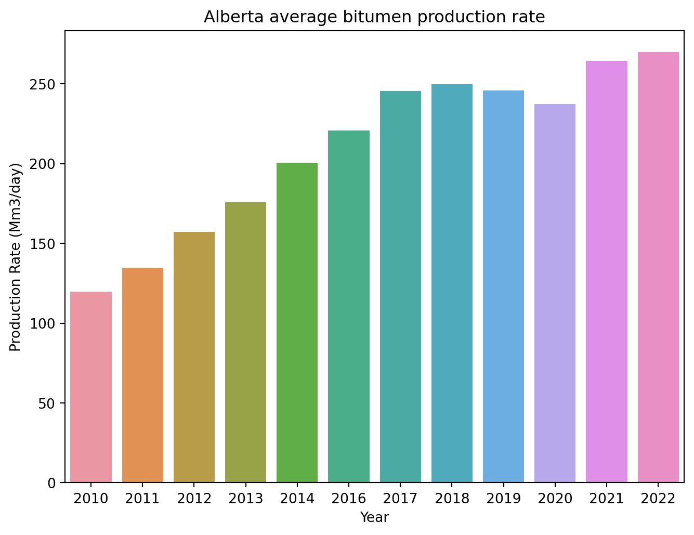
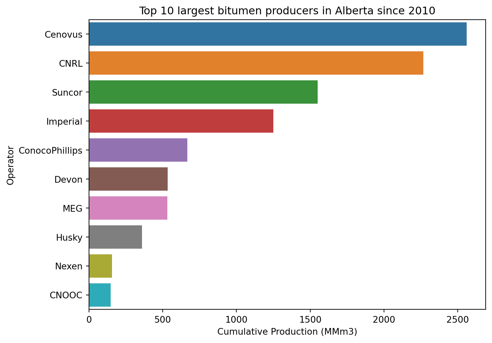
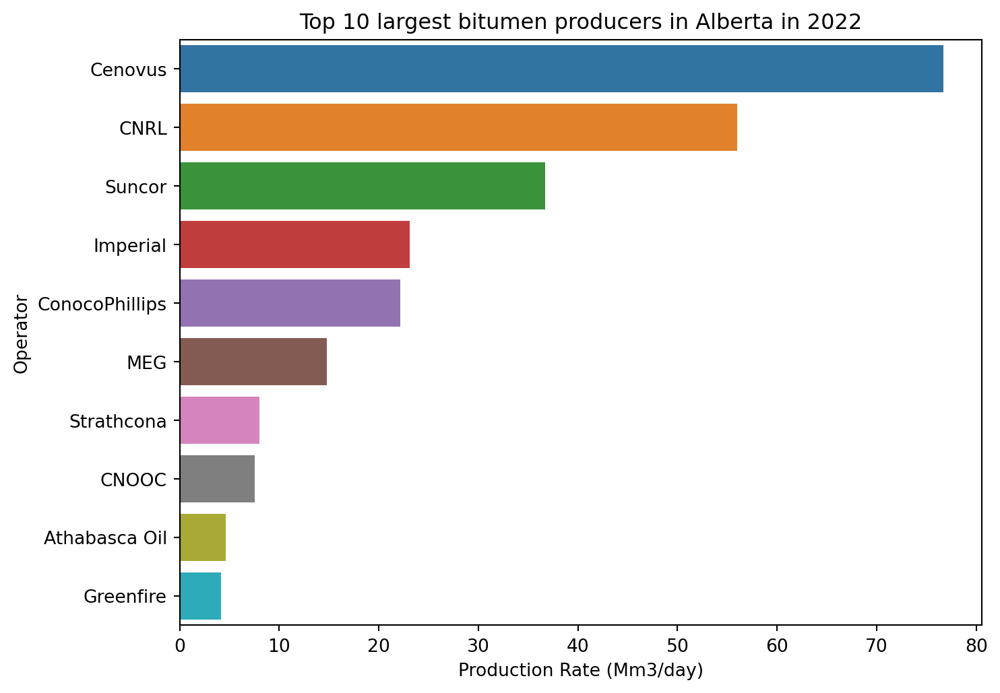
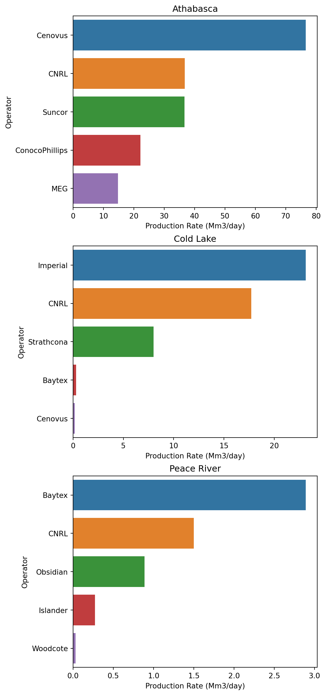

import glob
import pandas as pd
import matplotlib.pyplot as plt
import seaborn as snsAlberta In-situ Oilsands Production Analysis using Python - Part III
Data analysis and visualization
python
data analysis
data visualization
pandas
seaborn
matplotlib
Disclaimer
This blog post is for educational purposes only. Any commercial use of the information provided in this blog post is prohibited. For more information about the AER copyright and permission to reproduce, please visit AER Copyright and Disclaimer. The author is not responsible for any damage or loss caused by the use of the information provided in this blog post.
Introduction
Alberta Energy Regulator (AER) lists the monthly injection and production data for all in-situ oilsands projects in Alberta on its website Alberta Energy Regulator. The data is available in several spreadsheets and can be downloaded from ST53: Alberta In Situ Oil Sands Production Summary. The annual data are reported in separate files in .xls format. Each file has 6 different sheets with information about bitumen, water, steam, wells, SOR, and WSR.
To learn how to download and prepare the tidy dataset in .csv format, please refered to the previous posts Downloading Alberta Oilsands Production Data using Python and Alberta In-situ Oilsands Production Analysis using Python - Part I. In this post we use the tidy bitumen.csv file for data analysis and visualization.
Loading the data
All files are stored in the current local directory. We use the glob module to list all .csv files in the directory and then use pandas to read the data into a DataFrame. The matplotlib and seaborn modules are used to create the plots.
The glob module is used to list all .csv files in the directory, which we can then read into a DataFrame using pandas.
csv_files = glob.glob('*.csv')
csv_files['bitumen.csv']The bitumen.csv file is loaded into a dataframe using the read_csv function from the pandas module.
bitumen = pd.read_csv("bitumen.csv")
bitumen.head()| Operator | Scheme Name | Area | Approval Number | Recovery Method | Jan | Feb | Mar | Apr | May | Jun | Jul | Aug | Sep | Oct | Nov | Dec | Year | |
|---|---|---|---|---|---|---|---|---|---|---|---|---|---|---|---|---|---|---|
| 0 | CNRL | NaN | Cold Lake | 4746P | Commercial | 587.48 | 596.72 | 637.59 | 678.74 | 705.61 | 718.99 | 697.25 | 696.88 | 763.21 | 702.21 | 696.32 | 674.99 | 2010 |
| 1 | CNRL | NaN | Cold Lake | 6726I | Commercial | 171.54 | 193.66 | 187.71 | 177.54 | 176.90 | 174.50 | 160.53 | 155.97 | 168.22 | 168.27 | 139.73 | 143.48 | 2010 |
| 2 | Baytex | Cliffdale Pilot | Peace River | 11034E | Commercial-CSS | 0.00 | 2.55 | 6.15 | 2.25 | 4.16 | 10.59 | 5.83 | 3.27 | 9.18 | 20.09 | 15.42 | 13.15 | 2010 |
| 3 | North Peace Energy Corp. | Red Earth | Peace River | 11209A | Commercial-CSS | 10.30 | 4.70 | 3.11 | 2.21 | 1.63 | 0.51 | 0.00 | 0.00 | 0.40 | 0.00 | 0.00 | 0.00 | 2010 |
| 4 | Penn West | Seal | Peace River | 11377A | Commercial-CSS | 0.00 | 0.00 | 0.00 | 0.00 | 0.00 | 0.00 | 0.00 | 0.00 | 0.00 | 0.00 | 0.00 | 0.00 | 2010 |
Data analysis and visualization
Alberta average bitumen production rate per year
The daily bitumen production rate is reported as a monthly average in m3/day. An approximation of the yearly average production rate in m3/day is calculated by taking the average of the monthly average production rates. The yearly average production rate is then converted to Mm3/day by dividing it by 1,000.
# Calculate the average daily production rate for each year
bitumen_agg = (bitumen
.assign(Production_Rate = lambda x: x.loc[:,"Jan":"Dec"].mean(axis = 1))
.drop(columns = ['Jan', 'Feb', 'Mar', 'Apr', 'May', 'Jun', 'Jul', 'Aug', 'Sep', 'Oct', 'Nov', 'Dec'])
.groupby(['Year'])
.sum()
.div(1000)
.reset_index()
)
bitumen_agg| Year | Production_Rate | |
|---|---|---|
| 0 | 2010 | 119.596470 |
| 1 | 2011 | 134.691030 |
| 2 | 2012 | 157.040421 |
| 3 | 2013 | 175.839908 |
| 4 | 2014 | 200.679804 |
| 5 | 2016 | 220.765067 |
| 6 | 2017 | 245.572865 |
| 7 | 2018 | 249.694999 |
| 8 | 2019 | 245.745934 |
| 9 | 2020 | 237.340961 |
| 10 | 2021 | 264.391272 |
| 11 | 2022 | 269.899715 |
Let’s see the yearly average production rate in Mm3/day.
# Plot the yearly average production rate
plt.figure(figsize = (8, 6))
sns.barplot(x = 'Year', y = 'Production_Rate', data = bitumen_agg)
plt.title('Alberta average bitumen production rate')
plt.xlabel('Year')
plt.ylabel('Production Rate (Mm3/day)')
plt.show()
Largest bitumen producers in Alberta since 2010
The top 10 largest bitumen producers in Alberta since 2010 are listed below. The data is sorted by the total bitumen production in descending order. The total bitumen production rate is converted to MMm3/day by dividing by 1,000,000.
# Calculate the total bitumen production rate for each operator
bitumen_agg = (bitumen
.assign(Cumulative_Production = lambda x: x.loc[:,"Jan":"Dec"].sum(axis = 1) * 365)
.drop(columns = ['Jan', 'Feb', 'Mar', 'Apr', 'May', 'Jun', 'Jul', 'Aug', 'Sep', 'Oct', 'Nov', 'Dec', 'Year'])
.groupby(['Operator'])
.sum()
.div(1_000_000)
.sort_values(by = 'Cumulative_Production', ascending = False)
.reset_index()
.head(10)
)
bitumen_agg | Operator | Cumulative_Production | |
|---|---|---|
| 0 | Cenovus | 2561.630674 |
| 1 | CNRL | 2266.675729 |
| 2 | Suncor | 1550.949426 |
| 3 | Imperial | 1249.998787 |
| 4 | ConocoPhillips | 668.101066 |
| 5 | Devon | 533.488187 |
| 6 | MEG | 531.186018 |
| 7 | Husky | 359.571866 |
| 8 | Nexen | 157.297422 |
| 9 | CNOOC | 146.821801 |
The figure below illustrates the top 10 largest bitumen producers in Alberta since 2010.
# Plot the top 10 largest bitumen producers in Alberta since 2010
plt.figure(figsize = (8, 6))
sns.barplot(x = 'Cumulative_Production', y = 'Operator', data = bitumen_agg)
plt.title('Top 10 largest bitumen producers in Alberta since 2010')
plt.xlabel('Cumulative Production (MMm3)')
plt.ylabel('Operator')
plt.show()
Largest bitumen producers in Alberta in 2022
The top 10 largest bitumen producers in Alberta in 2022 are listed below. The data is sorted by the bitumen production rate in descending order. The yearly bitumen production rate is converted to Mm3/day by dividing by 1,000.
# Calculate the yearly bitumen production rate for each operator
bitumen_agg = (bitumen
.query("Year == 2022")
.assign(Production_Rate = lambda x: x.loc[:,"Jan":"Dec"].mean(axis = 1))
.drop(columns = ['Jan', 'Feb', 'Mar', 'Apr', 'May', 'Jun', 'Jul', 'Aug', 'Sep', 'Oct', 'Nov', 'Dec', 'Year'])
.groupby(['Operator'])
.sum()
.div(1000)
.sort_values(by = 'Production_Rate', ascending = False)
.reset_index()
.head(10)
)
bitumen_agg| Operator | Production_Rate | |
|---|---|---|
| 0 | Cenovus | 76.725747 |
| 1 | CNRL | 55.968093 |
| 2 | Suncor | 36.721742 |
| 3 | Imperial | 23.121582 |
| 4 | ConocoPhillips | 22.142553 |
| 5 | MEG | 14.758539 |
| 6 | Strathcona | 7.995144 |
| 7 | CNOOC | 7.562969 |
| 8 | Athabasca Oil | 4.610921 |
| 9 | Greenfire | 4.151495 |
The top 10 largest bitumen producers in Alberta in 2022 are shown in the plot below.
# Plot the top 10 largest bitumen producers in Alberta in 2022
plt.figure(figsize = (8, 6))
sns.barplot(x = 'Production_Rate', y = 'Operator', data = bitumen_agg)
plt.title('Top 10 largest bitumen producers in Alberta in 2022')
plt.xlabel('Production Rate (Mm3/day)')
plt.ylabel('Operator')
plt.show()
Largest bitumen producers in Alberta in 2022 by area
The top 5 largest 2022 bitumen producers by area in Alberta are listed below. The data is sorted by the bitumen production rate in descending order. The yearly bitumen production rate is converted to Mm3/day by dividing by 1,000.
# Calculate the yearly bitumen production rate for each operator by area
bitumen_agg = (bitumen
.query("Year == 2022")
.assign(Production_Rate = lambda x: x.loc[:,"Jan":"Dec"].mean(axis = 1))
.drop(columns = ['Jan', 'Feb', 'Mar', 'Apr', 'May', 'Jun', 'Jul', 'Aug', 'Sep', 'Oct', 'Nov', 'Dec', 'Year'])
.groupby(['Area', 'Operator'])
.sum()
.div(1000)
.sort_values(by = 'Production_Rate', ascending = False)
.groupby('Area')
.head(5)
.reset_index()
)
bitumen_agg| Area | Operator | Production_Rate | |
|---|---|---|---|
| 0 | Athabasca | Cenovus | 76.565583 |
| 1 | Athabasca | CNRL | 36.756985 |
| 2 | Athabasca | Suncor | 36.721742 |
| 3 | Cold Lake | Imperial | 23.121582 |
| 4 | Athabasca | ConocoPhillips | 22.142553 |
| 5 | Cold Lake | CNRL | 17.712652 |
| 6 | Athabasca | MEG | 14.758539 |
| 7 | Cold Lake | Strathcona | 7.995144 |
| 8 | Peace River | Baytex | 2.889908 |
| 9 | Peace River | CNRL | 1.498456 |
| 10 | Peace River | Obsidian | 0.889067 |
| 11 | Cold Lake | Baytex | 0.308280 |
| 12 | Peace River | Islander | 0.273017 |
| 13 | Cold Lake | Cenovus | 0.160163 |
| 14 | Peace River | Woodcote | 0.031730 |
The figure below shows the top 5 largest bitumen producers in Alberta in 2022 by area.
fig, ax = plt.subplots(3, 1, figsize = (6, 15))
for i, area in enumerate(bitumen_agg['Area'].unique()):
sns.barplot(x = 'Production_Rate', y = 'Operator', data = bitumen_agg.query("Area == @area"), ax = ax[i])
ax[i].set_title(area)
ax[i].set_xlabel('Production Rate (Mm3/day)')
ax[i].set_ylabel('Operator')
fig.subplots_adjust(top = 0.95)
plt.show()